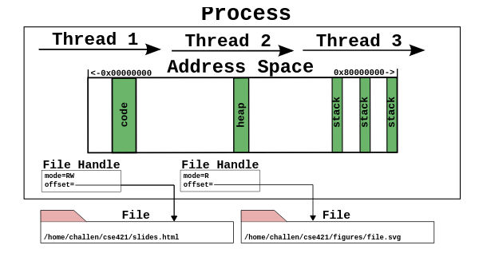
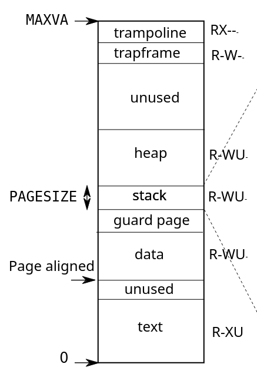

İşletim Sistemleri ve Bellek Yönetimi
Note
Bu yazıda işletim sistemleri ve bellek yönetimi konusundaki notlarım yer almaktadır. Yazının başları genel kavramlar ile ilgilidir, son kısmında ise xv6’ya özel bilgiler yer almaktadır. Yazının amacı genel olarak işletim sistemleri kavramlarını anlatmak olmadığından kavramlardan kısaca bahsedeceğim ve yüzeysel geçeceğim.
İşletim sistemi, bizim için temel 3 donanımı soyutlar: işlemci, bellek ve disk.
Disk, dosya sistemleri (NTFS, ext4, BTRFS, vs.) ile soyutlanır. Aslında ham veri depolama cihazı olan diskler dosya, klasör nedir bilmez. Bunlar dosya sisteminin sağladığı bir soyutlama katmanıdır. Dosya sistemleri de tipik olarak kernel tarafında gerçekleştirilir.
İşlemci, farklı thread’ler arasında paylaştırılır. Thread, işlemcide koşan
bir iş parçasıdır yani CPU’da yürütülen komutlar bütünü diyebiliriz. Bir
sistemde aynı anda aktif olan birden fazla thread olsa da her thread sanki
sadece kendisi varmış, başka bir thread yokmu, tüm işlemci ona aitmiş gibi
işlemciyi kullanır. İşlemci kaynağının birden fazla thread arasında
paylaştırılması işi işletim sisteminin bir görevidir. Linux gibi modern işletim
sistemlerinin çoğu, multi-thread programlamayı desteklerler yani bir process
içerisinde kernel desteği ile multi-thread çalışan programlar mümkün
olabilmektedir. Process ise aslında işletim sisteminin uydurduğu bir bileşke
veri yapısıdır. Yani bir programın thread’leri + file descriptor table + bellek
yapılandırması bir process oluşturur. xv6’da bir process sadece tek bir
thread’ten oluşabilir. Elbette kullanıcı kendi kodu ile multi-thread ilüzyonu
yaratabilir fakat xv6 kernelinin böyle bir desteği yoktur. xv6 multi-process
bir işletim sistemidir ama Linux’ta olduğunun aksine xv6, kernel seviysinde
multi-thread çalışmayı desteklememektedir. O yüzden xv6 ile ilgili konuların
çoğunda thread ve process kelimeleri aynı anlama geliyor gibi düşünülebilir.
Fakat process, thread dışında başka veri yapıları da içeren bir yapıdır.

Genel process mantığı bu şekildedir. Buradaki çizimde multi-thread bir uygulama gösterilmiş, 3 adet thread barındıran. Fakat xv6 bir process içerisinde bir adet thread destekliyor. Bu çizim xv6 için tamamen doğru değil fakat genel mantık olarak doğru bir gösterim.
struct proc un en önemli elemanlarından birinin file descriptor table olduğundan
bahsetmiştik. Burada da File Handle olarak ilgili tablodan satırlar gösterilmiş
aslında. Elbette xv6’daki struct proc içerisinde başka elemanlar da var.
Bellek, yani RAM, işletim sistemi üzerinde koşan tüm programlar yani process’ler ve kernel tarafından paylaşılmaktadır. Biz bir programı çalıştırdığımız zaman program, işletim sistemi tarafından belleğe açılıyor yani yükleniyor. Belleğin tam olarak hangi adresine yükleneceği ise işletim sisteminin vereceği bir karar. Çünkü bilgisayarda bir adet bellek olduğu ve bu belleğin birden fazla program tarafından paylaşılması gerektiği için burada her programa önden bir yer ayırmak mümkün değil, adeta bellek alanları çalışan programlara kiralanıyor. Fakat programın belleğin neresine açılacağını derleme sırasında bilmesi mümkün değil. Ayrıca aynı program işletim sistemi tarafından belleğin farklı taraflarına yerleştirilebilir. Diyelim ki program içerisinde temel load/store instruction’ları yani komutları (ya da buyruk) var. Bu komutların belleğin neresine erişeceğini bilmesi lazım. Fakat programın belleğin gerçekten neresinde olduğunu bilmezse bu komutların adresleri ne olacak? Buna bir çözüm bulunması gerekiyor. Bu çözümün donanımsal olarak işlemci tarafından da desteklenmesi lazım. İşte işletim sisteminin yaptığı önemli soyutlamalardan biri de belleğin soyutlanmasıdır. Tipik olarak programlar tüm belleğin onlara ait olduğunu düşünürler ve bir sanal bellek e erişirler, virtual memory. Sanal belleğe olan yazma/okuma işlemlerinin gerçek, fiziksel belleğe yani RAM entegresine dönüşümü, gerçekte belleğin neresine erişileceği konusu işlemci desteği ile sağlanır. Bu yazıda belleğin soyutlanmasına yani sanallaştırılmasına bakacağız. xv6’ye gelmeden önce probleme biraz daha genel bakalım. Bu konular ile ilgili olan anahtar kelimeler: virtual memory, paging, swapping, segmentation, position independent code (PIC) (kısmen)
Her Programa Bir Bellek Alanı
Yapabileceğimiz kötü çözümlerden biri çalışabilecek her program için fiziksel olarak bellekte belli bir alanı rezerve etmek ve bunu programa derleme aşamasında söylemek olurdu. Yani diyecektik ki 0-512MB arası firefox’a ait, 512MB-1G arası VS Code kullansın gibi. Elbette burada birçok problem var, kesinlikle ölçeklenebilir bir çözüm değil. Kullanılmayan programlar için rezerve edilmiş bellek, başka programlar tarafından kullanılamıyor, bu en temel problemlerden biri. Bu yöntemin çalışmayacağı belli oldu.
Relocation
Programların çalışmadan önce belleğin bir yerlerine yerleştirilmesi ve bu yerden bağımsız olacak şekilde çalışır hale getirilmesi relocation problemi olarak da biliniyor. Yani programı bellekte çalışabilirliğini bozmadan taşıma işi diyebiliriz.
Tarihsel olarak baktığımızda taa IBM 360 (60’lı yıllar) bilgisayarından itibaren bu, çözüm aranan bir problem olmuş.
IBM System/360 Model 50 CPU, computer operator’s console, and peripherals at Volkswagen
{kind=link}
Static Relocation
Diyelim ki programı bir dilde yazdınız, mesela C, derlediniz ve JMP 3 gibi bir
komut var, bu bellekteki 3 nolu adresteki kodu çalıştır demek. Programınız
kendisinin adres 0’dan itibaren yerleştiğini düşünüyor ama ya öyle değilse? İşte
bu durumda IBM 360 şöyle bir şey yapıyormuş: Diyelim ki işletim sistemi sizin
programınızı adres 1000’den itibaren yerleştirdi. Programı diskten belleğe
yüklerken static relocation denen bir teknik kullanıyor ve tüm JMP
komutlarının adresine 1000 ekliyor. Örneğin JMP 3 oluyor JMP 1003. Bu,
programın yüklenirken modifiye edilmesi demek. Programı başka bir yere taşımak
için de bu relocator yazılımının (programı modifiye eden yazılım) tekrar
çalışması gerekiyor. Bu, çok kullanışlı bir yöntem değil ama elbette zamanında
iş görmüş.
Dynamic Relocation ve Segmentation
Bir de dynamic relocation denen bir çözüm tekniği var. Bu tekniklerde dönüşüm, program çalışırken ve belleğe erişim sırasında yapılıyor. Elbette bunun için donanım desteği gerekiyor fakat program yüklenirken işletim sistemi tarafından modifiye edilmiyor, sadece bu mekanizmayı sağlayan donanım bileşenleri konfigüre ediliyor. Günümüzde işletim sistemi çalıştıran işlemcilerin hemen hemen hepsi bu kategorideki teknikleri kullanıyor.
Dynamic relocation teknikleri çeşitli, en temellerinden biri segmentation.
Burada tüm program için (kod + veri + stack), veya hepsi için ayrı ayrı birer
base register bulunuyor. Program, kendisi adres 0’daymış gibi çalışıyor. Fakat
aslında bu bir offset değer. İşletim sistemi, programı yüklediği zaman bellekte
nereye yerleştirdiyse ona göre bu base register ları ayarlıyor. Bir bellek
erişimi olduğu zaman ise işlemci donanımı gidip bellekten erişeceği adresi
en temel olarak gerçek adres = base register + offset şeklinde buluyor.
Program kodlarında ise JMP 3 gibi bir komut olursa (veri erişimi de benzer
şekilde), gerçek adres = base register + 3 mantığı ile hesaplanıyor. Aslında
mantık olarak static relocation ile benzer bir mantık var ama adres dönüşümü
donanım tarafından yapılıyor, işletim sistemi programı modifiye etmiyor.
Tarihsel açıdan baktığımızda CDC 6600 (1964), Intel 8088 (1979) gibi bilgisayar ve işlemciler farklı çalışma mantıkları sergileseler de base + offset mantığını destekliyorlar.
Fakat başka problemler de mevcut…
Fragmentation
Segment’ler tek bir birim ve bellekte ard arda olması gerekiyor. Diyelim ki programınızın data segment’i 300 MB yer tutuyor, kesintisiz bir 300 MB’lık boşluk bulmanız lazım aksi taktirde programı çalıştıramıyorsunuz. Sistem açılıp bazı programlar çalışıp, belleğe yüklenip, bellekten çıkarıldıkça bellekte boşluklar oluşmaya başlıyor, bellek delik deşik oluyor adeta. Bu durumda bellekte toplamda örneğin 1 GB boş alan olsa bile ard arda boşluklardan oluşan 300 MB’lık bir alan bulunamayabiliyor. Diyelim ki 4 adet 256 MB’lık boş yer var ama 300 MB’lık segment yine hiç bir yere girmiyor. Buna fragmentation problemi deniyor. Temel iki çeşidi var: internal fragmentation ve external fragmentation. Yazının konusu genel OS konuları olmadığı için detaylara girmiyorum.
Virtual Memory ve Paging
Günümüzde kullanılan temel dynamic allocation tekniği ise virtual memory,
Türkçe’ye sanal bellek (eskiden bir de sanal bebek vardı, hehe) olarak
çevrilebilir [1]. Burada bellek, page yani sayfa adında minik
parçalara ayrılıyor. Virtual memory yöntemi, 1961 yılında dünyanın ilk süper
bilgisayarlarından biri olan
Atlas’ta çalışan John
Fotheringham tarafından kullanılmış,
yani yöntem olarak oldukça eski.
Günümüz işlemcilerde page boyutu yani page size tipik olarak 4/8 KiB gibi değerlerde oluyor ama işlemcilerin çoğu MiB hatta GiB boyutlarında daha büyük page size değerlerini destekliyor. [2] Page size’ın büyük ya da küçük olmasının getirdiği çeşitili avantaj ve dezavantajlar var. Ama bunlar da bu yazının konusu değil.
Diyelim ki page size değerimiz 4 KiB, bu durumda process’in gördüğü sanal bellek ve gerçek fiziksel bellek 4 KiB’lik parçalara bölünüyor ve sanal bellekteki parçalar gerçek yani fiziksel belleğin herhangi bir 4 KiB’lık kısımlarına eşleştiriliyor. Yani process açısından bellek tek parça ve sürekli (contiguous) fakat arka planda olan eşleşme sayesinde her 4 KiB, fiziksel bellekte ard arda olmayan 4 KiB’lık bölüme denk geliyor olabilir.
Swapping
Virtual memory ile ilgili sık anılan terim ve tekniklerden biri de swapping kavramıdır. Swapping yapılabilmesi için virtual memory yani sayfa bazlı bir bellek yönetimi zorunlu değildir, segment bazlı sistemlerde de yapılabilir. Ama günümüzde artık standart olan yapı virtual memory + swapping diyebiliriz. Ben de virtual memory kullanan sitemler üzerinden anlatmaya devam edeceğim.
Swapping’in amacı fiziksel olarak belleğin yetmediği durumlarda belleğin bir
kısmının diske, hard disk veya SSD, konulması, diske aktarılan kısmın başka
process veya işler için kullanılması ve ihtiyaç halinde tekrar diskteki bellek
bilgilerinin geri yüklenmesidir. Linux üzerinde çalışan arkadaşlar zaten swap
kelimesi ile önceden muhtemelen tanışmışlardır. Swapping genellikle sayfalar
üzerinden olmaktadır. Yani bir sayfa komple diske aktarılır ya da diskten belleğe
geri konur. Elbette bu işlem, çalışan program bunun farkına varmadan yapılır.
Burada işletim sistemi ve işlemcinin donanımı rol alır.
Genel işletim sistemi kısmını burada kesiyorum. Fakat dilerseniz Kaynaklar
kısmındaki kaynaklardan veya beğendiğiniz bir işletim sistemi kitabından konuları
öğrenebilirsiniz. Şimdi xv6 ve RISC-V özelinde devam edelim.
xv6
xv6, RISC-V donanımının sunduğu paging yöntemini kullanan bir işletim sistemi. Yani virtual memory destekleniyor. xv6 gibi neredeyse tüm işletim sistemlerinde process’lerin gördüğü bir adress space vardır. Her process, aynı adress space’i görür. Tüm process’lerin belleğinin tümünün kendilerine ait olduğunu zanneder (hatta var olan fiziksel bellekten daha büyük bir bellek görürler). Gerçek bellek ile process’lerin gördüğü sanal belleğin birbiriyle eşleştirilmesi ve yönetimi işletim sisteminin çekirdeğinin kontrolünde, RISC-V donanımı sayesinde yapılır.
QEMU Sistemi
xv6’yı QEMU üzerinde emule ediyoruz. Şimdi gelin QEMU tarafından sağlanan RISC-V temelli sistemin bellek haritasına bir bakalım.
Bunun için QEMU’nun kaynak kodundan çeşitli ipuçları toplayabiliriz:
70static const MemMapEntry virt_memmap[] = {
71 [VIRT_DEBUG] = { 0x0, 0x100 },
72 [VIRT_MROM] = { 0x1000, 0xf000 },
73 [VIRT_TEST] = { 0x100000, 0x1000 },
74 [VIRT_RTC] = { 0x101000, 0x1000 },
75 [VIRT_CLINT] = { 0x2000000, 0x10000 },
76 [VIRT_ACLINT_SSWI] = { 0x2F00000, 0x4000 },
77 [VIRT_PCIE_PIO] = { 0x3000000, 0x10000 },
78 [VIRT_PLATFORM_BUS] = { 0x4000000, 0x2000000 },
79 [VIRT_PLIC] = { 0xc000000, VIRT_PLIC_SIZE(VIRT_CPUS_MAX * 2) },
80 [VIRT_APLIC_M] = { 0xc000000, APLIC_SIZE(VIRT_CPUS_MAX) },
81 [VIRT_APLIC_S] = { 0xd000000, APLIC_SIZE(VIRT_CPUS_MAX) },
82 [VIRT_UART0] = { 0x10000000, 0x100 },
83 [VIRT_VIRTIO] = { 0x10001000, 0x1000 },
84 [VIRT_FW_CFG] = { 0x10100000, 0x18 },
85 [VIRT_FLASH] = { 0x20000000, 0x4000000 },
86 [VIRT_IMSIC_M] = { 0x24000000, VIRT_IMSIC_MAX_SIZE },
87 [VIRT_IMSIC_S] = { 0x28000000, VIRT_IMSIC_MAX_SIZE },
88 [VIRT_PCIE_ECAM] = { 0x30000000, 0x10000000 },
89 [VIRT_PCIE_MMIO] = { 0x40000000, 0x40000000 },
90 [VIRT_DRAM] = { 0x80000000, 0x0 },
91};
Burada Base Address, Size çiftlerini görüyoruz. RAM kısmının base adresinin
0x80000000 olduğunu görüyoruz fakat boyutunun 0 olması elbette olası değil,
başka bir yerden geliyor olmalı. Kodun ilerleyen kısımlarında şöyle bir satır
var:
1288/* build the array of physical mem area from base_memmap */
1289mem_array.address = s->memmap[VIRT_DRAM].base;
1290mem_array.length = ms->ram_size;
Belleğin boyutu muhtemelen bu koda bir yerlerden parametre olarak geliyor. Burada xv6 repository’sindeki Makefile yardımcı oluyor:
Note
İlerleyen kısımlarda f5b93ef nolu commit’i referans alacağım.
159QEMUOPTS = -machine virt -bios none -kernel $K/kernel -m 128M -smp $(CPUS) -nographic
160QEMUOPTS += -global virtio-mmio.force-legacy=false
161QEMUOPTS += -drive file=fs.img,if=none,format=raw,id=x0
-m 128M argümanı ile oluşturulan “sanal makine” 128M ile oluşturuluyor.
Bunu xv6 kodunda başka yerlerde de görüyoruz:
44// the kernel expects there to be RAM
45// for use by the kernel and user pages
46// from physical address 0x80000000 to PHYSTOP.
47#define KERNBASE 0x80000000L
48#define PHYSTOP (KERNBASE + 128*1024*1024)
xv6’nın kodunun yorumlarına bakarsak 0x80000000 ve ilerisindeki 128M’lik alanın
hem kernel hem de kullanıcı programları tarafından kullanılan bellek alanı
olduğunu görüyoruz. Yani şimdilik her şey tutarlı gidiyor.
3// qemu -machine virt is set up like this,
4// based on qemu's hw/riscv/virt.c:
5//
6// 00001000 -- boot ROM, provided by qemu
7// 02000000 -- CLINT
8// 0C000000 -- PLIC
9// 10000000 -- uart0
10// 10001000 -- virtio disk
11// 80000000 -- boot ROM jumps here in machine mode
12// -kernel loads the kernel here
13// unused RAM after 80000000.
Yukarıdaki yorumlardan başka bilgiler de çıkartıyoruz. Birçok bilgisayar sistemi
gibi bu sistem de Memory Mapped
I/O
yapısında. UART, PLIC (Interrupt Controller) gibi donanımların hepsi işlemcinin
bellek haritasında birer bellek alanı gibi duruyorlar. Yani 0-2GB (0x80000000)
arası alan görünüşe göre donanıma rezerve edilmiş, sonrasında RAM başlıyor.
Bizim durumda RAM 128 MB ile sınırlı ve bu kısıt xv6’nın kodu içerisine de
gömülmüş durumda.
Process Bellek Haritası
Kernelin kendisi ve çalışan her bir process virtual memory üzerinden çalışmaktadır. Yani gördükleri bellek aslında bir ilüzyon! Bahsettiğim paging mekanizması ile elbette gerçek bellekte, yani bu örnekte 128 MiB’lik bellekte, karşılıkları var (ya da bazen yok, sonuçta virtual, swap edilmişse? 🙄). xv6 üzerinde çalışan her bir process aynı virtual memory’yi görüyor, kernelin ise farklı bir address space’i var ama konumuz şimdilik user space process’ler.
xv6, varsayılan olarak 4 KiB yani 4096 byte’lık page size ile çalışır:
335#define PGSIZE 4096 // bytes per page
336#define PGSHIFT 12 // bits of offset within a page
Yani bu demek oluyor ki process’lerin gördüğü bellek 4096 byte’lık parçalara ayrılmıştır, 128 M’lik bellek de aynı boyutta parçalara ayrılmıştır, bunlara page diyoruz. Process’in gördüğü page’ler, gerçek page’lere herhangi bir kombinasyonla eşlenebilir. Bu işletim sisteminin sorumluluğundadır. Kuralı işletim sistemi koyar fakat bu kurala göre bu dönüşümleri RISC-V işlemcisinin kendisi yapar yani donanımda yapılır. Onun için önceki yazıların birinde OS policy belirler, donanım implementation yapar demiştim.
Peki user space process’ler yani çalıştırdığımız programlar nasıl bir bellek görüyor?

Process’lerin gördüğü virtual memory. Tırtıklı çizgilerle çizim sağ tarafa doğru uzuyor ama o kısma sonraki yazılarda bakacağız. 🙂
İşte bu şekilde! Programlar diskte duruyor, biz bunları çalıştırdığımız zaman
belleğe açılıyorlar. Bunu işletim sistemi yapıyor. Programların içerisinde
çeşitli section lar bulunuyor. text isimli section CPU’da çalışacak kodu
içeren kısım yani CPU komutları. İşte bu kısım adres 0’dan başlanarak belleğe
yerleştiriliyor, ama virtual memory adresi böyle. Gerçek fiziksel adres bambaşka
olabilir. Şu an sadece sanal adreslerden konuşuyoruz. data kısmı, programın
verileri. Mesela bir C programında oluşturduğumuz statik ömürlü değişkenler
(global değişkenler, statik yerel değişkenler) bu alana yerleştiriliyorlar.
stack, çalışacak program içerisinde bulunan bir kısım değil, process
oluşturulurken işletim sistemi tarafından yaratılan bir alan. Yine C’den
düşünecek olursak fonksiyon çağrılarında argüman ve dönüş değerlerinin
geçirilmesi buradan yapılıyor ve otomatik ömürlü yerel değişkenler stack
üzerinde yaratılıyorlar. xv6’da stack boyutu runtime sırasında değişmemektedir
ve 1 page size kadardır, yani varsayılan olarak 4096 byte. data ile stack
arasında bir guard page var. Bunun amacı stack taşmalarını yakalayabilmek,
detaylarına bakacağız. Daha yukarıda ise heap yer alıyor. Burası dinamik
bellek yönetimi ile işletim sisteminden çalışma sırasında yani runtime sırasında
bellek tahsis edilen yer. heap alanının boyutu, çalışma sırasında program
tarafından yapılan sbrk() sistem çağrısı ile değiştirilebiliyor. Yani işletim
sisteminden daha çok bellek isteyebiliyoruz. C’de kullandığımız malloc() ve
benzeri fonksiyonlar da arka planda bunu yapıyorlar. Runtime sırasında boyutu
değiştirilebilen tek alan heap tir. Belleğin en tepesinde ise trapframe ve
trampoline isimli iki page var. Bunlar user space ve kernel space arası
geçişler, context switch işleri için, sonra bakarız.
Virtual memory’nin tepe değeri MAXVA sembolik sabiti ile belirlenmiştir.
359// one beyond the highest possible virtual address.
360// MAXVA is actually one bit less than the max allowed by
361// Sv39, to avoid having to sign-extend virtual addresses
362// that have the high bit set.
363#define MAXVA (1L << (9 + 9 + 9 + 12 - 1))
Burada MAXVA nın değeri tam 256 GiB olmaktadır! Elbette bu bellek sanal
bellektir, sonuçta elimizde fiziksel olarak 128M bellek var. İşte bu alanlar
arka planda donanım tarafından gerçek belleğe eşleniyor. Çalışan program çok
yüsek adreslere eriştiğini zannetse de fiziksel olarak başka adreslere erişiyor.
İlerleyen yazılarda bakarız, bizim sistemde virtual address 39-bit oluyor. Fakat burada bir bit daha kısıp 38-bit ile sınırlamışlar. Yani 39-bitlik sanal bellek adresinin MSB’si her zaman 0 bu sistemde. Bu aralığı 512 GiB’ten 256 GiB’e düşürüyor ama zaten sayılar çok büyük, pratikte bu bir kayıp yaratmıyor. Avantajı da şu diye anlıyorum, ileride kernel kodlarına bakarız: Ola ki iki 39-bit’lik sayıyı karşılaştırmaya sokarsak C’de bu sayıların sign bit extension ile negatif sayı gibi extend edilmesinin ve hatalı karşılaştırma yapılmasının önüne geçelim diye MSB her zaman 0 tutulmuş diye anlıyorum. Bu C kuralları ilgili bir şey ve bir nevi bir defensive programming örneği.
Son olarak RXWU gibi karakterlerin anlamına bakalım. RISC-V işlemcisinde
page’lere çeşitli attribute lar atanabiliyor. Örneğin bir page sadece okunabilir,
çalıştırılabilir veya yazılabilir gibi işaretlenebiliyor. Bunun amacı olası
program hatalarının programı bozmasını önlemek. Örneğin text alanının çalıştırılabilir
koddan oluştuğunu söylemiştik. Onun için bu alanın W yetkisine sahip olmasına
gerek yok, üzerine yazma yapmayacağız. Eğer yanlışlıkla yazma yaparsak, diyelim
ki programda bir bug var bu sefer işlemci bunu engelleyecektir.
Rokunabilir pageXexecute edilebilir yani çalıştırılabilir page. Buradakiler CPU üzerinde çalıştırılabilir.Wyazılabilir pageUuser modda erişilebilir page
Bir de page için V yani valid flag’i var ama şu an konumuz dışında.
Eğer kullancının çalıştırdığı program, ilgili page’in özelliğine uymayan bir
işlem yaparsa işlemci bir exception üretiyor ve bununla işletim sistemi
ilgileniyor. Örneğin kullanıcı programı trampoline ve trapframe e erişemez,
U özelliği yok. data kısmındaki bir şeyi CPU’da çalıştıramaz, X yok gibi.
Attention
Her process’in virtual memory görünümü aynı olsa da fiziksel belleğe olan eşleşmesi farklı olacaktır. Her process için kernel bir adet eşleşme tablosu tutmaktadır. Sanal page’ler ile gerçek page’ler arası eşleşmeyi gösteren bu tablonun adı page table dır. Bunun kernel seviyesinde nasıl gerçekleştirildiğine sonra bakarız.
Kaynaklar
https://lass.cs.umass.edu/~shenoy/courses/fall12/lectures/Lec12.pdf
http://staff.um.edu.mt/csta1/courses/lectures/csm202/os10.html
https://lass.cs.umass.edu/~shenoy/courses/fall12/lectures/Lec12.pdf
🌟 Modern Operating Systems, 4th Edition, Tanenbaum. Chapter 3 Memory Management.
978-0133591620https://pdos.csail.mit.edu/6.828/2023/xv6/book-riscv-rev3.pdf
💭 Comments
Comments are provided by giscus. You need to use and authenticate your GitHub account to post a comment. Comments are stored on the Github Discussions.
2610ab7f-7904-4bff-aa0a-e654a9142f3f